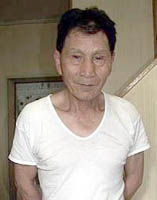

中村茂歳さんの"炭鉱の記憶"（聞き取り年月日場所：2004年7月29日 滋賀県甲賀郡水口町 中村さん自宅）  滋賀県甲賀郡水口町在住の中村茂歳さんは、昭和6年、福岡県三池郡東米生町（現・大牟田市）生まれ、 現在73歳。
中村さんは尋常高等小学校を卒業した昭和22年の16歳のとき、近所の三井三池炭鉱職員社宅に住む採用課幹部の紹介を得て、
三井三池鉱業所宮原浄水場に就職。しかし、終戦後間もないときであり、きょうだいも多かったことから食べるものも満足にな
く栄養失調で体を悪くし三池鉱業所をやむなく退職。 このとき、第二豊州炭坑から先に滋賀県へ出ていた仲間から「こっちへ来ないか」という誘いがあった。そして中村さん一家 の4人家族は昭和48年、滋賀県甲賀郡水口町西林口の雇用促進住宅へ移り住んだ。当時同雇用促進住宅は2棟あり（現在は3棟）、 6畳・4畳半・台所という広さは、小学5年生と中学生の子供2人を抱えた中村さん一家にとってはとても狭かったという。 その頃の雇用促進住宅はほとんどが炭鉱出身者の家族で埋め尽くされ、その中でも貝島炭鉱からの離職者が多勢を占めていた。 その中で、これからの新生活を悲観して自殺した人もあった。また、同離職者対策で紹介してもらった工場をやめて、ふるさと筑 豊のまだ稼動している他の中小炭鉱へ再び戻っていく者もいた。「ヤマのモンは、やはりヤマで暮らすのが一番。きつい仕事 やったが、気心知れた仲間がいた。」と中村さんは言う。 炭鉱では、落盤事故等で3度死ぬような目に遭ったが、鼻を骨折したものの九死に一生を得、現在も若々しく元気である。普 段は無口な方であるが、炭鉱の話になると熱が入り、「もう一度ふるさとを見てみたい」と懐かしげに語っていた。自宅玄関に は糒炭鉱最後の日、坑内から記念に持って上がってきたという黒光りした石炭の大きな塊が大切に飾ってある。 以下は、そんな中村さんからの聞き書きである。
私の家は倉掛にあった。当時の倉掛は今と違って繁華街やった。家の前に中国から連れてこられた
人たちの寮があった。万田鉱から下がってきた所にある金物屋の前やった。女の人が、マーカン言うてな、その人たちに朝昼晩
めしを食わせてやったり、弁当を詰めてやったりして働いていた。めしはボロボロの外米。それも腹八分しかあたらんかったげ
な。 戦争の時の捕虜は捕虜で三川坑に連れてきて、大きな会館のような建物におらせて、坑内で働かせよ
った。私の親父も徴用で人工島掘りに行きよったけん、アメリカ兵と一緒に仕事しよった。休憩時間に弁当食いよったら、その
アメリカ兵がジーッと見てるけん、可哀想に思うて監視員に隠れて半分やったげな。監視員に見つかると、こっちが怒られるけ
んな。そしたらこうして手を合わせて喜びよったそうな。きつい仕事をさせられて、倒れるとムチで叩かれよったらしいな。し
かしそんなアメリカ兵も終戦になるとピシッとした軍服を来て、サーとジープで私の家にやってきて、親切にしてくれたお礼や
言うて、チョコレートや肉をたくさんくれよった。しかし、ようわしらの家がわかったなーと思うてな。 私の家内の兄さんは、鉱山学校を卒業して三池炭鉱で働きよったが、三川坑が昭和38年11月に大爆発 した時、「こりゃー、かなわん」言うてやめた。命までかけて炭鉱で働かんでもよかけんな。本当はその時、中番で弁当持って 家を出たんやけど、その日は何となく気が進まず、炭鉱へは行かんと映画を観ていたらしい。その日いつものように仕事に行っ ていたら死んでいたやろう。何が幸いするかわからんもんや。 私も荒尾にあった三井の子会社の三和炭坑で死に目におうたことがある。当時はまだ若く養成工だったから坑外の仕事をしよ ったけど、坑内に下がると金がいいけん、下げてくれと頼んだ。最初は事務所に反対されたけど、近所の人が「私が責任を持つ けん」と言ってくれて、坑内に下がることができた。ある日、採炭をしよったとき、坑内の枠を支えている柱が回るか回らんか 4人で交代して見よったら、柱がほんの数ミリだけ動いたので、よーく注意して見よったら、柱がくるっと一回転しよった。私は すぐにみんなに「回るるバイ」と叫んで、「それっ、逃げろ」って逃げた途端に、天井の岩が落ちてきて、九死に一生を得た。 やがて三和炭鉱が昭和35年10月閉山したもんで、田川市の糒炭鉱に移ったが、そこでも大き な事故があった。そこでは掘進の仕事をしよったが、先山が「もう上がろうか」というので、上がって風呂へ入っているときや った。「ボカーン！！」て横の方から爆発がして、みんなが「何、馬鹿しよっとか！！」言うて飛んで行ったら、全員が死んだ 爆発事故やった。あくる日、人間ひらいに行ったが、頭が飛んだり、手が飛んだり、足が飛んだりしていて、それをナイロン袋 に入れて歩いたな。そりゃー、本当にむごかったよ。 川崎町の豊州炭坑でも水没事故でたくさんの者が死んでな。明治時代に掘った坑道が抜けたんやけ ど、その古い坑道を土で埋めずにただ坑口を密閉しただけだったもんで、中がポンポンになっている所からよくガスが漏れよっ た。皆は、「ガスが漏れよるバイ」「臭いがしよるバイ」と事務所に言いよったけど、事務所は「心配することなか」言うて、 何にもしよらんかった。そんな時、6月の梅雨時に、クジラが潮を吹くように、古い坑道の上から充満したガスが吹き抜けて穴 が開いて、川の水が流れ込んだたい。人道がすぐ横にあったけんな、5、60人が死んだんかな。あすこには今も人間が埋まっ たままたい。なぜって、助け上げるとなるとユンボも入らんけん、手作業になるから5年も10年もかかるたい。だからそのま またい。 田川に行くと、よく家が地盤沈下しとろもん。道路は国が仕事するけん、地盤沈下はせんかったが、
建物がある地面はよく何メートルも下がりよった。地上げ言うて、そこへ土やら何やら入れて工事しよったが、それでもちょっ
とづつ下がる。田んぼなんか、雨が降って水が溜まるもんでレンコン掘りにするしかなか。そういう風に、炭坑があった所は
地面の下のあちこちに坑道が今も走っとるとよ。
|